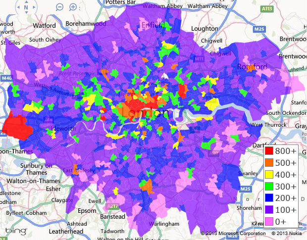

As the population of the world grows, optimisation of services is crucial to be able to help as many of those people as possible: whether through emergency services, shop stock levels or public transport links. To improve these services, data need to be collected about the usage of these - Anything from what is bought in a shop or how many people are on buses to crime rates and fires.
Unfortunately for us humans, the volume of data collected from the millions of people in a general area is far too high to manually analyse - sitting at a desk for 6 hours a day with your pocket calculator, typing in numbers constantly: that's not sustainable. However, computers don't get bored, and are quite a bit faster at doing maths, especially for large or decimal numbers (which data quite often are), so can be programmed to do this for us, allowing us to just plug in some large dataset and get averages, heatmaps, whatever, many times faster than anyone could ever do this by hand.
Because of this, we can spend our time on actually improving the services we're analysing, rather than being stuck in a loop of get data - put in calculator - more data arrive (still not done calculating) - put some more in, etc. This has led to faster emergency service responses, lower crime rates, lower chances for a store to not have a commonly needed item, and more.
For example, analysis of police reports can give us insight on where crime occurs most frequently, and we can then put this on a map to warn others of where to be most cautious, and where to put the most police stations:

Analysing data gives us information on what the future could hold, so we can make predictions and act accordingly - this helps if, for example, some sort of disease broke out across a country, or even the whole world, we could make predictoions based on where it spreads, and put countermeasures in place to contain the disease hmmmm... wonder if that's happened before...
Many types of analysis tools exist, including: